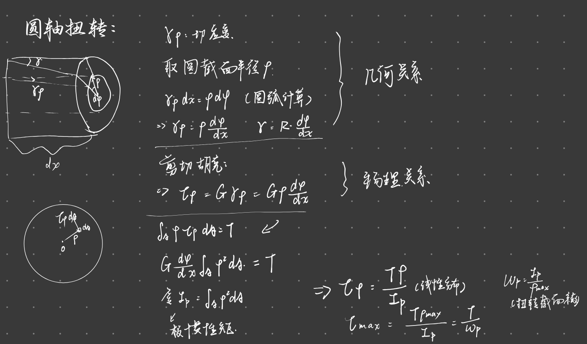
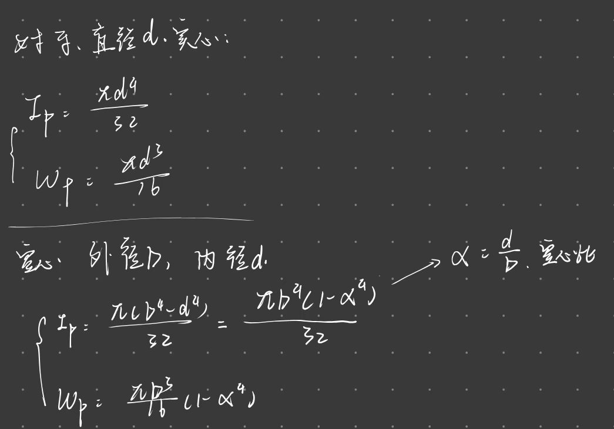

材料力学
记录课程学习笔记
成绩构成
- 平时成绩 40%
- 作业30%
- 其他10% 小测：选择+计算
- 期末考试 60%
连续性假设
轴力 剪力 应力
-
变形与应变
- 位移
- 变形
- 线变形：长度变化
- 角变形：角度变化
- 应变
- 正应变（线应变）

- 切应变（角应变）

- 正应变（线应变）
-
杆件变形基本形式（5种）
- 拉伸/压缩
- 轴线受到一对大小相等，方向相反的力，力的方向沿轴线方向

- 剪切：
- 大小相等，方向相反的横向力，力的作用线很近

- 扭转：
- 弯曲：
- 轴线由直线变曲线，杆件受到一对大小相等方向相反力偶，力偶作用线为包含轴线的纵向面

- 拉伸/压缩

材料力学分析流程
2.拉伸与压缩/剪切与挤压
截面法


e.g.

- 平面假设：变形前原为平面的横截面，变形后仍保持为平面且仍垂直于轴线。
- 1.所有纵向纤维的伸长相等
- 2.因材料均匀，故各纤维受力相等
- 3.内力均匀分布，各点正应力相等，为常量。
- 得到横截面应力计算公式：\(\sigma=\frac{F_N}{A}（应力=内力/横截面积）\)
- 拉应力为正，压应力为负
圣维南原理
e.g.

斜截面的应力
- 正应力 \(\sigma_{\alpha}=\sigma_0(\cos\alpha)^2\)
- 切应力 \(\tau_{\alpha}=\frac{\sigma_0}{2}\sin2\alpha\)

材料拉伸时的力学性能


失效
屈服或强度
轴向拉伸或压缩时的形变
胡克定律
应力不超过比例极限时
应力=应变×弹性模量
$$
\sigma=E\epsilon
$$
弹性模量
杆件的纵向变形计算公式： $$ \Delta l = \frac{F_N l}{EA} $$
说明：
-
\(EA\) 乘积项被称为杆的抗拉（抗压）刚度。
-
在该公式中：
-
\(F_N\) 为轴力；
-
\(l\) 为杆件原长；
-
\(E\) 为材料的弹性模量；
-
\(A\) 为横截面积。
-
泊松比
1、纵向变形与应变
-
纵向变形量：\(\Delta l = l_1 - l\)
-
纵向线应变：\(\varepsilon = \frac{\Delta l}{l}\)
2、横向变形与应变
-
横向变形量：\(\Delta b = b_1 - b\)
-
横向线应变：\(\varepsilon' = \frac{\Delta b}{b}\)
3、泊松比定义
泊松比 \(\mu\) 定义为横向应变与纵向应变绝对值的比值：
由此可得横向应变公式：
$$ \varepsilon' = -\mu \varepsilon $$ 纵向拉伸横向缩短，纵向压缩横向伸长
e.g.
“以切代弧“的方法

应变能
线性条件下
根据功能原理，外力所做的功 \(W\) 等于杆件储存的应变能 \(V_\varepsilon\)：
结合基本变形公式 \(\Delta l = \frac{Fl}{EA}\)，应变能也可以通过变形量 \(\Delta l\) 来表达：
应变能密度
- 应变能密度定义
应变能密度 (\(v\))：单位体积内储存的应变能。
- 基于胡克定律的表达形式变换
结合胡克定律 \(\sigma = E \varepsilon\)，应变能密度可以进一步表示为：
- 仅含应力形式： $$ v = \frac{1}{2E} \sigma^2 $$
- 仅含应变形式： $$ v = \frac{1}{2} E \varepsilon^2 $$

超静定问题
1、静定与超静定问题
- 超静定度数： 约束反力多于独立平衡方程的数。 $$ n = \text{未知力的个数} - \text{独立平衡方程的数目} $$
2、求解超静定问题的步骤
-
确定超静定度数：分析题目中的未知力与平衡方程数量，列出静力平衡方程；
-
几何分析：根据变形协调条件，列出变形几何方程；
-
物理分析：将变形与力之间的关系（如胡克定律）代入变形几何方程，从而获得补充方程。
温度应力
线涨系数
\(\alpha\)

装配应力
求解步骤
 一般步骤：
一般步骤：
- 找静力平衡方程
- 补充超静定次数方程
- 找变形几何相容方程：变形后的位置，向变形前的位置，各个杆件作垂线得伸长量
- 代入力与位移或变形的物理关系，得补充方程
- 联立求解
应力集中
应力集中因子 $$ K=\frac{\sigma_{max}}{\sigma_{nom}} $$ 影响因素：
剪切与挤压实用算法
剪切
切应力： $$ \tau=\frac{F_s}{A} $$ 切应力强度条件： $$ \tau=\frac{F_s}{A}<=[\tau] $$

挤压
$$
$$
挤压面积为孔壁投影面积
3.扭转
3.1外力偶矩的计算
根据功率守恒得出： $$ M_c=\frac{9549P}{n} $$

3.2 扭矩和扭矩图
正负号规定： 右手螺旋法则变为力偶矢，指向离开截面扭矩为正，反之为负
绘制扭矩图
标注单位、正负、大小
3.3 纯剪切
薄壁圆筒
薄壁圆筒扭转时的切应力
$$
\tau = \frac{T}{2\pi r_0^2 \delta} = \frac{T}{2A_0 \delta}
$$
横截面上切应力分析
针对薄壁圆筒受扭转的情况，切应力 \(\tau\) 的推导如下：
-
平衡方程：\(\int_{\text{环}} r_0 \cdot \tau dA = T\)
-
简化公式：
\[ r_0 \cdot \tau \cdot 2\pi r_0 \delta = T \]\[ \tau = \frac{T}{2\pi r_0^2 \delta} = \frac{T}{2A_0 \delta} \](其中 \(A_0 = \pi r_0^2\) 为圆筒中线所包围的面积)
-
适用条件：当壁厚 \(\delta \le r_0/10\) 时，误差不超过 4.52%，足够精确。
-
圆筒横截面上没有正应力，只有切引力
- 沿圆周各点的切应力大小相等，方向垂直于半径
- 切应力合成扭矩 T
切应力互等定理
在相互垂直的两个平面上，切应力一定成对出现，其数值相等，方向同时指向或背离两平面的交线。
切应变剪切胡克定律

截面相对扭转角
应变能
扭转时应变能密度

圆轴


温度

本章公式总结
材料力学研究的三个步骤 - 几何关系 - 物理关系 - 静力平衡关系 杆件的纵向变形计算公式： $$ \Delta l = \frac{F_N l}{EA} $$
4
剪力
弯矩


荷载
集中分布
线性分布


集中力： 剪力突变、弯矩突变
集中力偶：剪力不突变，弯矩突变
载荷集度、剪力和弯矩关系


6.弯曲变形
基本概念
 挠度 w：梁上一点竖直位移，与 y 坐标同向为正
截面转角θ：横截面绕中心轴转动角度，顺时针为正
挠曲线 w=w(x)
转角与绕曲线关系
$$
\theta=w'
$$
挠度 w：梁上一点竖直位移，与 y 坐标同向为正
截面转角θ：横截面绕中心轴转动角度，顺时针为正
挠曲线 w=w(x)
转角与绕曲线关系
$$
\theta=w'
$$
挠曲线近似方程
积分法求弯曲变形
积分两次代入边界条件
连续条件

叠加法求弯曲变形
经典场景
- 悬臂梁
- 简支梁


梁的弯曲应变能
7.应力状态
平面应力状态： 不等于 0 的应力分量军处于同一坐标平面
应力分析方法
切应力正负号：使微元顺时针转动为正
α角正负号规定：x 轴逆时针转动为正
解析法
切应力互等定理是什么
正应力和切应力： $$ \sigma_\alpha=\frac{\sigma_x+\sigma_y}{2}+\frac{\sigma_x-\sigma_y}{2}\cos{2\alpha}-\tau_{xy}\sin{2\alpha} $$ $$ \tau_\alpha=\frac{\sigma_x-\sigma_y}{2}\sin{2\alpha}+\tau_{xy}\cos{2\alpha} $$
正应力极值与方位角：
方位角
$$
\tan{2\alpha_0}=-\frac{2\tau_{xy}}{\sigma_x-\sigma_y}
$$
求导法：
极小值和极大值
将方位角的两个在 \((-\pi/2,\pi/2)\) 的根代入应力公式的得到
三角函数变换求解方法： 极大值和极小值公式如下 $$ \sigma_{\alpha,max}=\frac{\sigma_x+\sigma_y}{2}+\sqrt{(\frac{\sigma_x-\sigma_x}{2})^2+\tau_{xy}^2} $$ $$ \sigma_{\alpha,min}=\frac{\sigma_x+\sigma_y}{2}-\sqrt{(\frac{\sigma_x-\sigma_x}{2})^2+\tau_{xy}^2} $$
主应力和主平面
正应力取极值时切应力恒为 0
- 一点处切应力=0 的截面为主平面
- 主平面上的正应力为主应力（极值正应力）
第一主应力和第二主应力方位角判定方法

切应力的极值
最大切应力
$$
\tau_{max}=\pm\sqrt{(\frac{\sigma_x-\sigma_y}{2})^2+\tau_{xy}^2}
$$
方位角，和正应力主平面成 45°角
$$
\alpha_1=\alpha_0+\frac{\pi}{4}
$$
小结：

应力圆法
1.斜截面应力
 斜截面圆应力：
斜截面圆应力：
- 正应力：
$$
\sigma_{\alpha} = \frac{\sigma_x + \sigma_y}{2} + \frac{\sigma_x - \sigma_y}{2} \cos 2\alpha - \tau_{xy} \sin 2\alpha
$$
- 切应力：
$$
\tau_{\alpha} = \frac{\sigma_x - \sigma_y}{2} \sin 2\alpha + \tau_{xy} \cos 2\alpha
$$
圆方程： $$ \left( \sigma_{\alpha} - \frac{\sigma_x + \sigma_y}{2} \right)^2 + \tau_{\alpha}^2 = \left( \frac{\sigma_x - \sigma_y}{2} \right)^2 + \tau_{xy}^2 $$
圆心： $$ (\frac{\sigma_x+\sigma_y}{2},0) $$ 半径： $$ r=\sqrt{\left( \frac{\sigma_x - \sigma_y}{2} \right)^2 + \tau_{xy}^2} $$
应力圆画法 ：

单元体与应力圆对应关系

主应力与主平面

应力极值

空间应力
广义胡克定律
空间应力状态下应力与应变间的关系
单轴拉伸状态：
本构关系：应力&应变关系

纯剪应力状态：

空间应力状态：

即广义胡克定律 x 方向： $$ \varepsilon_x = \frac{\sigma_x}{E} - \nu \frac{\sigma_y}{E} - \nu \frac{\sigma_z}{E} = \frac{1}{E} \Big[ \sigma_x - \nu(\sigma_y + \sigma_z) \Big] $$ $$ \begin{cases} \varepsilon_x = \dfrac{1}{E} \Big[ \sigma_x - \nu(\sigma_y + \sigma_z) \Big] \ \varepsilon_y = \dfrac{1}{E} \Big[ \sigma_y - \nu(\sigma_z + \sigma_x) \Big] \ \varepsilon_z = \dfrac{1}{E} \Big[ \sigma_z - \nu(\sigma_x + \sigma_y) \Big] \end{cases} $$ 主应变：

例题：


应变能密度
- 单轴拉伸情况：

-
纯剪应力

-
主单元体
主单元体：3 个面都是主平面（只有正应力没有切应力）
主应变：只有正应变没有切应变
 4. 一般单元体
4. 一般单元体

体积改变能密度&形状改变能密度
体应变： $$ \theta=\frac{V_1-V}{V}=\epsilon_1+\epsilon_2+\epsilon_3 $$ 体应变与应力分量关系： $$ \theta=\frac{1-2\nu}{E}(\epsilon_1+\epsilon_2+\epsilon_3) $$
应变能密度： $$ \nu_{\epsilon}=\nu_{\nu}+\nu_{d} $$
体积改变能密度：
形状改变能密度：
强度理论
失效形态；
- 脆性断裂
- 塑性屈服
abstrect
四种强度理论
- 最大应力理论
第一强度理论（最大强度理论）
最大拉应力与拉伸极限关系
脆性断裂判据： $$ \sigma_1=\sigma_u $$ 强度条件： $$ \sigma_1 \le [\sigma] $$
第二强度理论（最大伸长线应变理论）
无论材料处于什么应力状态，只要构件内有一点处的最大线应变达到了单向拉伸的应变极限，就发生断裂破坏。
脆性断裂判据： $$ \varepsilon_1 = \frac{\sigma_u}{E} $$ 强度条件： 将最大主应变 \(\varepsilon_1\) 用主应力表示 $$ \text{即 } \frac{\sigma_1 - \nu(\sigma_2 + \sigma_3)}{E} = \frac{\sigma_u}{E} $$ $$ \sigma_1 - \nu(\sigma_2 + \sigma_3) \le [\sigma] $$
第三强度理论（最大切应力理论）
屈服判据： $$ \tau_{max}=\tau_u=\frac{\sigma_s}{2} $$ $$ 即 \sigma_1 -\sigma_3=\sigma_s $$ 强度条件： $$ \sigma_1 -\sigma_3 \le [\sigma] $$
第四强度理论（形状改变能密度理论）
形状改变能密度：
单向拉伸： $$ \sigma_1=\sigma_s ;\sigma_2=\sigma_3=0 $$ $$ \nu_{du}=\frac{1+\nu}{6E}\cdot2\sigma_s^2 $$
屈服判据： $$ \nu_d = \nu_{du} $$ $\(米塞斯应力\sigma_{eq} = \sqrt{\frac{1}{2} \Big[ (\sigma_1 - \sigma_2)^2 + (\sigma_2 - \sigma_3)^2 + (\sigma_3 - \sigma_1)^2 \Big]}=\sigma_s\)$ 强度条件： $$ \sigma_{eq} \le [\sigma] $$
相当应力
相当应力：
$$
\sigma_r \le [\sigma]
$$
$$
[\sigma] = \frac{1}{n}{\sigma_b, \sigma_{0.2}, \sigma_s}
$$
需要记忆，分别对应四种强度理论